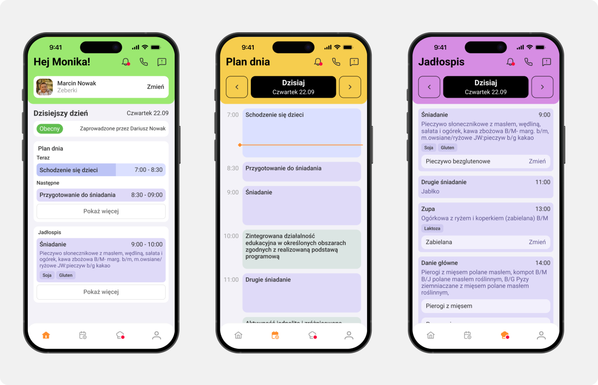
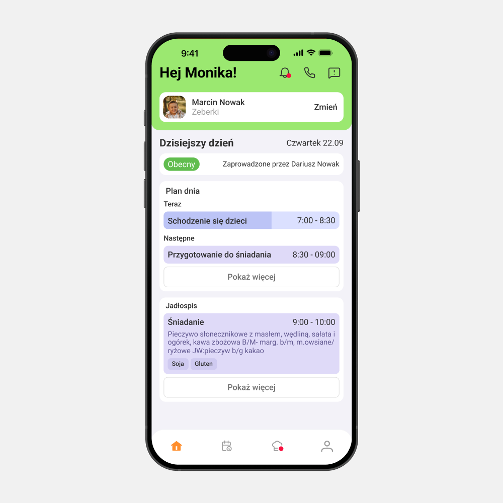
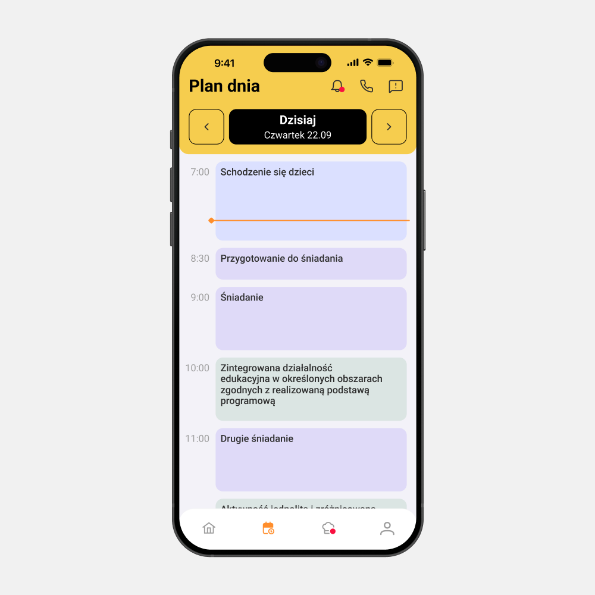
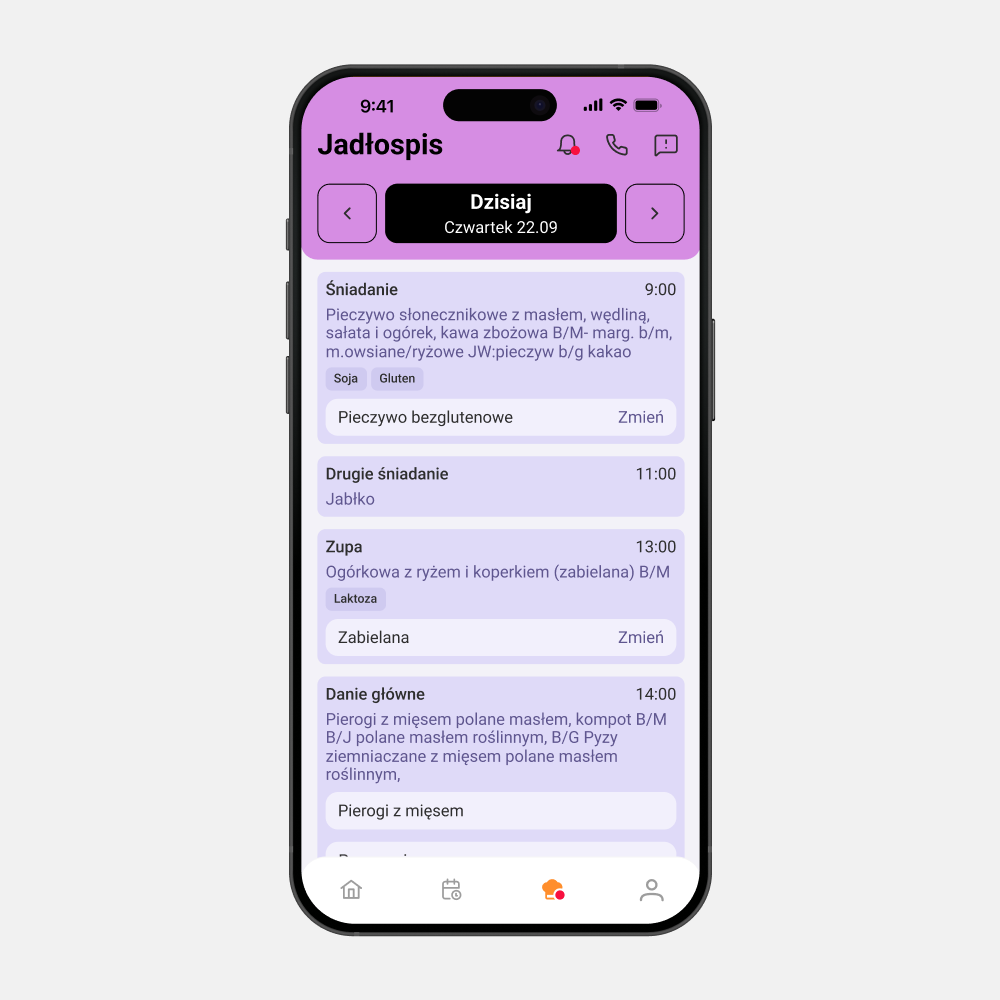
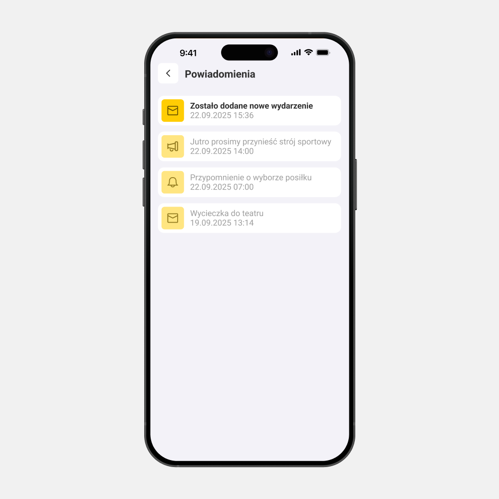
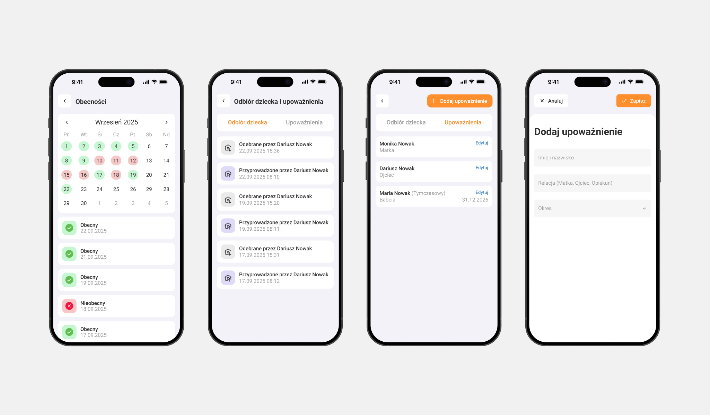
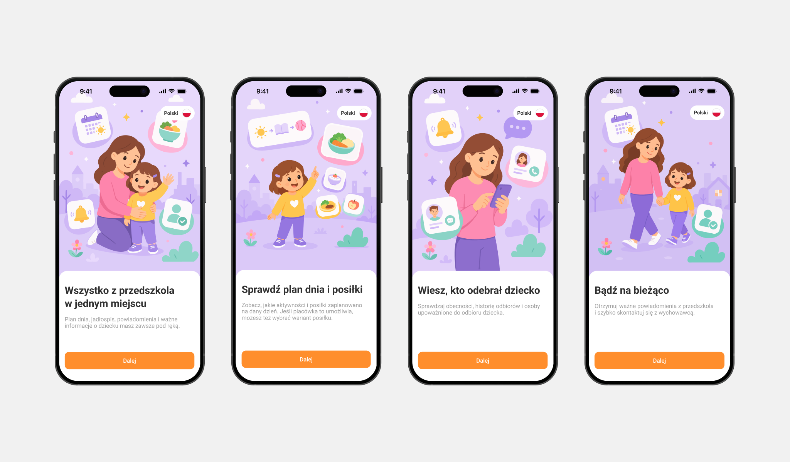
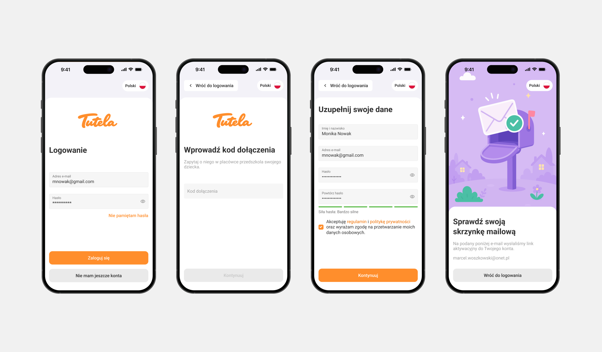
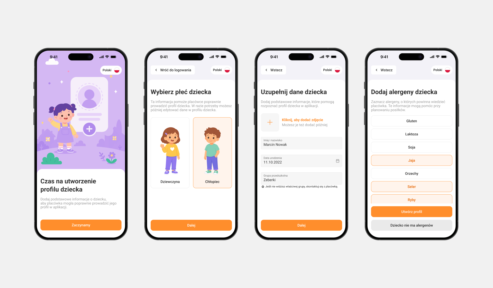

Aplikacja ułatwiająca codzienną komunikację rodziców z przedszkolem

Wprowadzenie
Przedszkole potrzebowało prostszego sposobu komunikacji z rodzicami. Informacje były rozproszone
między rozmowami, wiadomościami, telefonami i ogłoszeniami, więc potrzebne było rozwiązanie, które
zbiera je w jednym miejscu.
Aplikacja miała być szybka i lekka, bo rodzic często korzysta z niej w biegu, między codziennymi
obowiązkami.
Cel
Celem było stworzenie interfejsu, który szybko pokazuje dzień dziecka i ułatwia kontakt z placówką.
Najważniejsze były: obecność, plan dnia, jadłospis, komunikaty, kontakt z personelem oraz ustawienia
związane z profilem dziecka i odbiorem.
Wyzwanie
Największym wyzwaniem było ułożenie wielu funkcji w czytelną hierarchię. Aplikacja miała obsłużyć
plan dnia, obecność, komunikaty, jadłospis, kontakt, upoważnienia i ustawienia, ale bez przeciążania
głównych widoków.
Proces projektowy
Prace rozpoczęły się od najczęstszych scenariuszy rodzica. Na tej podstawie produkt został podzielony na pięć obszarów.




Ekran główny jako skrót dnia
Obecność, aktualny etap dnia, kolejne aktywności i podgląd jadłospisu zostały zebrane w jednym widoku.
Szczegóły trafiły na osobne ekrany, dzięki czemu ekran główny pozostał prosty.
Plan dnia oparty na osi czasu
Harmonogram został pokazany jako sekwencja wydarzeń w czasie. Rodzic szybciej widzi, co dzieje się teraz,
co już minęło i co pojawi się w kolejnych godzinach.
Jadłospis z decyzjami rodzica
Posiłki zostały zebrane w czytelnych kartach z godziną, opisem i oznaczeniem alergenów.
Warianty posiłków są widoczne przy konkretnym daniu, bez przenoszenia decyzji do osobnego procesu.
Powiadomienia oddzielone od planu dnia
Komunikaty otrzymały osobny widok, aby ważne informacje nie mieszały się z codziennym harmonogramem.
Lista pokazuje typ wiadomości, tytuł i datę, co ułatwia szybkie wyłapanie nowych spraw.
Założenia
Ekrany pomocnicze porządkują akcje, które nie powinny obciążać głównego widoku. Trafiła tu zmiana
języka, kontakt z placówką, formularz uwagi i możliwość przełączania się pomiędzy profilami dzieci
(przydatne, jeżeli są w innych grupach wiekowych).
Obecności i upoważnienia
Ten obszar porządkuje informacje związane z obecnością, odbiorem dziecka i osobami upoważnionymi.
Rodzic może sprawdzić historię odbiorów, zobaczyć kto odebrał dziecko oraz dodać stałe lub czasowe
upoważnienie bez kontaktu z placówką poza aplikacją.

Onboarding i rejestracja
Każdy ekran onboardingu skupia się na korzyściach, jakie oferuje aplikacja, a prosty układ i powtarzalny
CTA pomagają przejść dalej bez zatrzymywania się na długich opisach.

Dalszy proces został podzielony na małe kroki, tak aby przejście przez niego było sprawne, a wypełnianie formularzy
nie tworzyło obciążenia poznawczego. Synchronizacja konta z placówką opiera się na kodzie dołączenia,
dzięki któremu konto rodzica od razu łączy się z właściwym przedszkolem i dzieckiem.

Profil dziecka zbiera tylko najważniejsze informacje: dane podstawowe i alergeny. Pozwala to dopasować
posiłki przygotowywane w ciągu dnia i przyspiesza uzupełnianie profilu.

Efekt
Efektem był kompletny projekt aplikacji mobilnej, gotowy do prototypowania, testów i dalszego rozwoju.
Rozwiązanie pomaga rodzicom szybko odnaleźć najważniejsze informacje, a placówce porządkuje komunikację.